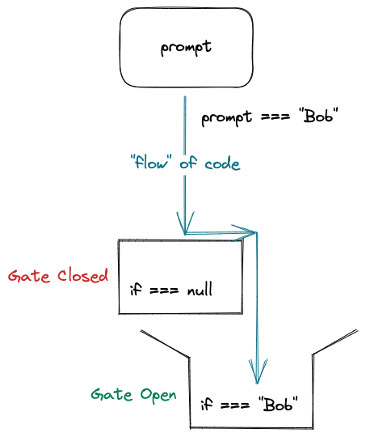

External Scripts
Most of the time, your JavaScript will be written in a separate file, like you do with CSS. Up until this point we've been using embedded script tags, as it is better for prototyping.
However, there are several benefits to having external script files:
- The browser can cache a copy of the script, so if many pages on your site need to use it the browser only downloads it once.
- It can keep your HTML much cleaner and easier to read.
- Over time, code is much more maintainable if it is not spread out across little files.
Let's create a script file in the day1/resources/ folder.
Then add it using a script element.
IMPORTANT: Order of execution
It is important that our JavaScript runs AFTER our HTML has been fully processed by the browser. To make sure that happens we have 2 choices:
-
Place the
scriptelement at the bottom of our document. -
Use the
deferattribute to tell the browser "wait until the rest of the page is loaded, before you load this file."
Using a defer attribute looks like this:
<script defer src="../resources/1-6_DONE.js" />
So long as you use that, you can add your scripts in the
head of your HTML with no issues.
Sloppy vs. Strict Modes of JavaScript
"Old School" JavaScript used to allow developers to write code that was shall we say more "loosey goosey". Modern JavaScript introduced a newer "strict mode" which can help developers in several ways:
- Catches errors that in older versions of JavaScript would "silently fail"
- Encourages the developers through more precise error messages to write better code
- Prevents developers from using certain keywords that are reserved for future versions of JavaScript
To enable strict mode in your external JavaScript files, add
"use strict"; to the top of your script file.
Conditional Logic, and Control Flow
We need to write code defensively, because we need to account for all the things the user might do. To do that, we have to think about control flow.
Lets go back to our 1-3 and 1-4 example with the
prompt() method. We learned through our dev tools that
depending on how the user fills out (or does not fill out) the prompt,
different values are returned to our code. We can end up with a
string that contains characters("Bob"), an empty string
(""), or null.
I like to imagine my code as water flowing down stream, and depending on certain conditions different gates will open or close, changing the flow of the water.
That, in essence is conditional logic.
Lets add some conditional logic, so that we only change the text when the user supplies us with a very specific name, "Bob".
Hi, No-Name!
Using conditionals, we control what code is executed and which isn't, depending on the state of our application and behavior of the user.
Get the hang of that, then you are basically controlling where electrons flow using your mind, which is pretty rad. 😎